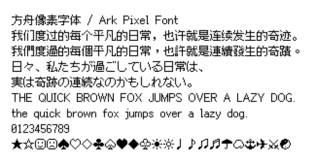
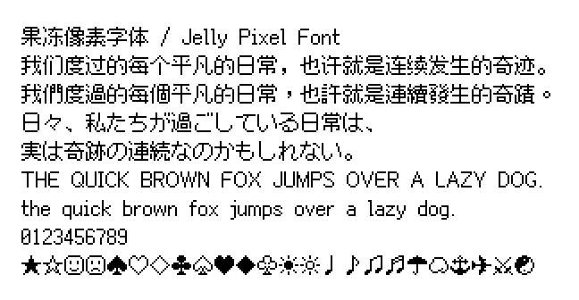
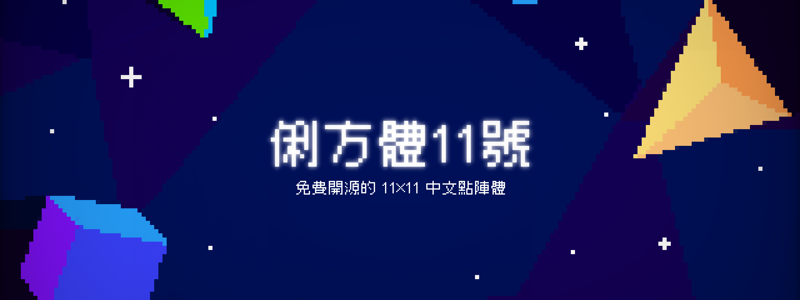
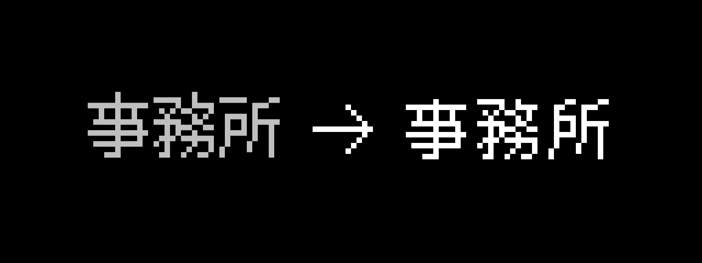
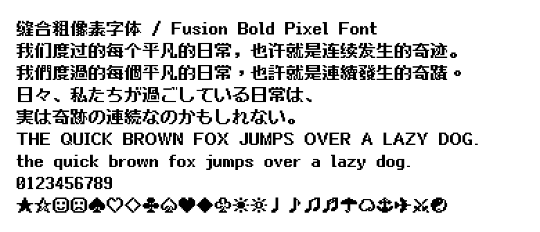
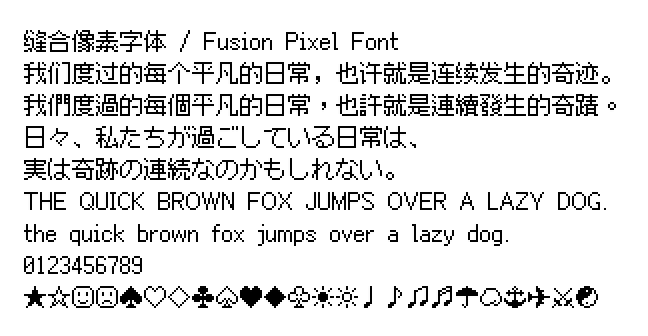

全部为 SIL OFL 1.1（或同等免费可商用再分发）。当前 App 使用的是 Fusion Pixel（你说丑）。
用浏览器打开本页对比后，告诉我编号即可替换。
路径：Browserapp/assets/fonts/_preview/index.html

正统黑体像素，字库完整（简中 zh_cn）。比 Fusion 更干净。仓库：TakWolf/ark-pixel-font

圆角更软。简中包体积极小，缺字可能比 Ark 多。仓库：TakWolf/jelly-pixel-font


经典点阵感最强，偏繁体/台港字形，简中也有覆盖。仓库：ACh-K/Cubic-11

当前 Fusion 的加粗版，侧栏可能更清晰，但仍是缝合风格。仓库：pixel-font-studio/fusion-bold-pixel-font

你说太丑的那个。缝合多源，字库全但风格不统一。
不可免费商用（未列入）：Zpix 需付费商用。未成熟/无现成 release：Pulse Pixel、Capsule Pixel。
回复例如：用 A / 用 C / A 侧栏 + C 正文